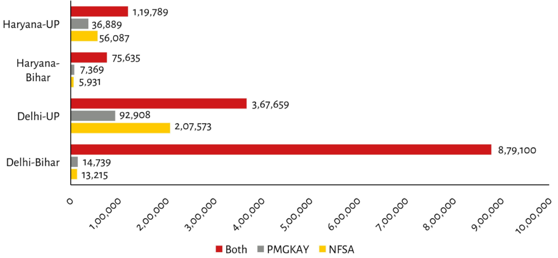

| Region | Both | PMGKAY | NFSA | | :--- | :--- | :--- | :--- | | Haryana-UP | 1,19,789 | 36,889 | 56,087 | | Haryana-Bihar | 75,635 | 7,369 | 5,931 | | Delhi-UP | 3,67,659 | 92,908 | 2,07,573 | | Delhi-Bihar | 8,79,100 | 14,739 | 13,215 |
